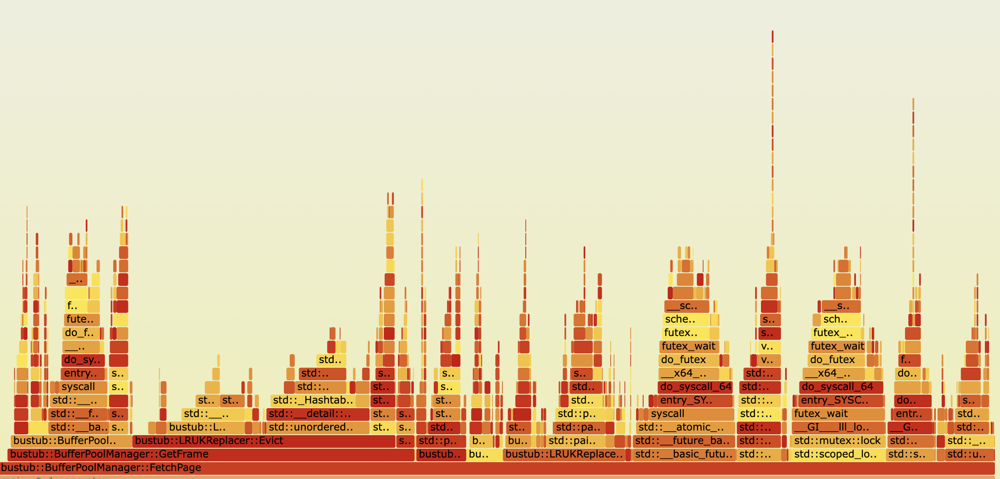

LRU-K Replacer
用双向链表+哈希表替换了原有实现
原有实现是哈希表指向每个frame对应的node，在node里存该frame的所有历史。evict时候需要遍历所有的frame😅
维护history和buffer两个双向链表，history保存访问次数不足k次的，buffer保存大于等于k次的。规定history中按earliest overall timestamp（就是最早访问最早的最优先出去，理解水平有问题吃了好多苦）当前时间戳的距离降序保存，buffer中按LRU-K降序保存。
约定链表尾部为最recent的，因此evict时候应该从链表的头部开始找。
哈希表保存链表的迭代器，cpp对list迭代器失效有不错的保证。
在修改过程的踩坑点如下：
- 在调试器watchpoint里放了一些表达式，导致address sanitizer在运行到某行代码时总是报错，但看不出那行代码有什么问题。😅
- 对STL list不熟，被博客坑了
- earliest overall timestamp
修改前

修改后，好像Evict的平原少了一点

Buffer Pool Manager
参考
Title Unavailable | Site Unreachable
CMU 15-445 2023 P1 优化攻略 - 散落的叶子
首先是一个重要的观察：哪些操作是支持被并发调用的，并且是涉及IO的。这是粗看下来对性能影响最大的部分。
其实只有并发多个FetchPage（同一个pid或者不同pid），并发多个NewPage。
在FetchPage中涉及写回脏页和读取磁盘两个步骤，NewPage中涉及写回脏页。
在本文中frame被用来指代内存中的page，page指磁盘中的page
参考大佬的说法，我们可以把等待IO完成这件事放在大锁的外面。
假设处理磁盘读写任务的队列有保证所有提交的请求被按顺序完成，我们只需要保证任务发出的顺序，也就是在大锁持有期间按顺序发出即可。（踩坑：之前没注意这一点，导致偶尔出现插队，难以debug）。举例一个我这的出错情况，两个线程并发fetch，后者fetch了前者驱逐出的页。请求队列应该是写X读Y写Z读X，如果没有在大锁期间发出导致请求被插队成写Z读X写X读Y，就很容易直接触发disk_manager的断言，如page x not exist或者page x not in range。
牢记下面只需处理并发多个FetchPage（同一个pid或者不同pid），并发多个NewPage。
为了提高性能，队列中的请求应当被尽量并发执行。容易想到的是，对于内存中不同的frame的请求是可以并行处理的。这里唯一需要注意的一个约束是磁盘操作的全局顺序：对磁盘上page的读请求不应该插队到之前的写同一个page请求之前，正如上文中的那个例子。（而且这样的对同一个page的操作在整个队列里至多只有这样一对，所以编码处理起来不难 😉见后文继续分析）。剩下的情况有些可能只是因为我通过外部设计避免了，如不可能出现有两个对同一个page的写请求（不可能有多个frame存储同一个page，同一个frame多次写回也是可以避免的），不可能同时有多个对同一个page读请求（并发fetch同一个page），先读后写也是不可能的（读说明正在fetch，这时不会发出对这个page的写请求）。
我在bpm中处理对同一个page的并发fetch，加了个标记位，晚到的fetch看到标记位只需等待即可，不会发出磁盘请求。
至此算是理解了这两点在说什么并且完成了，在这两点上好像没什么文章可做了，除非可以再放宽对请求处理顺序的要求😵💫
1. Parallel I/O operations. Instead of processing one request at a time in your disk scheduler, you can issue multiple requests to the disk manager at the same time. This optimization will be very useful in modern storage devices, where concurrent access to the disk can make better use of the disk bandwidth. You should handle the case that multiple operations to the same page are in the queue and the end result of these requests should be as if they are processed in order. In a single thread, they should have read-after-write consistency.
2. To achieve true parallelism in disk scheduler, you will also need to allow your buffer pool manager can handle multiple `FetchPage` requests and evicting multiple pages at the same time. You might need to bring in a conditional variable in your buffer pool manager to manage free pages.
2025.4.17 发现代码里埋了个bug，write完忘记通知等待中的reader💦
原版命中率4.19%，纯get的命中率是12.84%
对scan，作不加入LRU-K中的处理后，命中率为6.22%，纯get的命中率为12.75%。
2025.6.21 尝试继续优化无果 首先我想对之前的一些实现细节作补充。我的DiskScheduler为每个frame提供一个后台线程，后台线程处理请求时只需要特殊考虑上面图中的情况，必须要让读读到最新的写（为什么？因为既然Fetch Y先持有bpm大锁并执行了，其他线程得看到Fetch Y的Write X。这里我反思了Fetch Y后续的R Y被其他请求插队执行似乎是无关紧要的，也即似乎不需要在bpm锁持有期间提交请求）。后台线程依序处理同一个frame的请求时需要考虑RAW的情况，即等待其他线程的对同一个page的写完成再读，或者直接从该线程那里偷读。我的DiskScheduler处理线程能处理同一个frame按序提交多个请求的情况，能按序完成。
观察了一下DiskManager-模拟磁盘设备的Latency设置，我尝试着拍脑袋优化。Latency设置说，如果你的新请求相比上次请求是sequential的，或者你的新请求和最近某次请求在同一块中，那么延迟不会很大。
为此我这样构造，bpm是请求的生产者，而且我们有很多这样的生产者，提交到请求队列中。我创建一个中间线程，他会尝试识别队列中在同一块中的请求，将他们打包。我创建了一个固定线程数量的工人池，他们可以消费请求。中间线程会将成批的请求均匀的发送给工人们，从而保证同时提交请求，并能利用磁盘的特性。然而效果不佳。🤣
我做的时候好像忽略是考虑最近几次请求而不是最近一次请求了。
Query
CMU15-445 23Fall Project 3 优化攻略-CSDN博客
CMU 15445 Project 3 - xxxl’s Blog
这部分主要参考了第一位大佬的博客。
刚拾起来的时候有点痛苦，感觉当初自己完全没看懂里面Schema，Value的细节，只是勉强会用。现在还是这样
踩坑点：
bustub中的值包装类型，在我没有确认类型就转换的情况下就进行转换Value.GetAs<int64_t>()。有类似ub一样的感觉，很长时间困扰了我的Optimize1的实施。
优化规则感觉有不小的工作量和心智负担。（其实bustub对这几条优化的要求不高，只要能覆盖他提供的几条样例sql即可。）经历这件事，我有如下体会：
多用断言表达你对程序行为的假设。（其实感觉都是jyy在调试理论里讲的）首先这能帮助你最快速地定位一些错误，而不是让程序在偏离你预期之后还一直跑，最后在一个风马牛不相及的地方彻底崩溃，让你一头雾水，然后再经历漫长的调试过程反着定位回来。其次，当我添加一个新功能时，往往需要在多个相关代码模块中为他新增修改提供支持。于我而言，我的脑容量/上下文大小可能是不够那么大的，常常会遗漏某个模块的修改。如果你之前已经在程序中用断言表达了你的假设，那么即使你遗漏了也能很快发现，也就是说我觉得这种做法对变更也是很友好的。你的脑袋里的假设能够落到代码中，尽管你没意识到原有假设已经被打破了，计算机会提醒你这一点。
其他的没啥好说了，老生常谈♿的模块抽象，不要重复你自己这一块还是得多学习。
小心C++构造函数期间传出this指针。